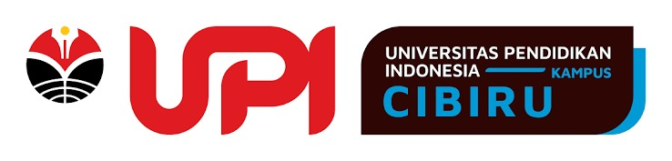

Cerita bergambar

logo prodi'">Halo, Penjelajah Cilik! Di sini kamu akan melihat, bermain, berdiskusi, lalu membuat karyamu sendiri. Siap menjelajah?
Setelah belajar, peserta didik dapat:
Yuk, kita mulai dari sebuah cerita!
Saat libur sekolah, Raka dan Sari pergi ke rumah nenek. Mereka melihat sawah luas, menyeberangi sungai, lalu mendaki jalan berkelok. Dari jendela tampak gunung berkabut dan sebuah danau yang tenang. “Wah, pemandangannya banyak sekali!” kata Sari.
Hubungkan cerita tadi dengan hidupmu.
Petani menanam padi di dataran rendah.
Petani teh memilih dataran tinggi yang sejuk.
Nelayan mencari ikan di laut.
Setiap daerah memiliki kegiatan yang berbeda. Ada warga yang menanam padi, merawat kebun, menangkap ikan, atau membersihkan sungai. Kegiatan tersebut dilakukan sesuai dengan lingkungan tempat tinggal mereka.
Yuk, kita ikut menjaga lingkungan dengan membuang sampah pada tempatnya dan menggunakan air secukupnya!
Ketuk kartu, lalu mainkan permainannya!
Yuk, bagikan jawaban dan temuanmu melalui Padlet!
Perhatikan tabel berikut. Tuliskan alasan mengapa pekerjaan tersebut cocok dengan bentang alamnya. Setelah selesai, tekan tombol Kirim Jawaban T agar jawabanmu tersimpan. Kemudian, bagikan hasil jawabanmu melalui Padlet.
| Bentang alam | Profesi masyarakat | Mengapa cocok di sana? |
|---|---|---|
| Dataran rendah | Petani padi | |
| Dataran tinggi | Petani teh | |
| Pantai | Nelayan | |
| Danau | Pembudidaya ikan |
“Saya memilih bentang alam …” · “Pekerjaan yang sesuai adalah …” · “Pekerjaan tersebut cocok karena …”
Mari ikat semua yang sudah dipelajari!
Yuk, pelajari kembali materi bentang alam melalui media interaktif berikut!
Buka Materi Canva 📚Waktunya berkarya! Tunjukkan hasil jelajahmu.
Pilih satu bentang alam, lalu buat gambar atau miniatur sederhana. Tunjukkan profesi masyarakatnya dan tulis satu pesan agar bentang alam tetap terjaga. Setelah selesai, ceritakan karyamu.
Jika sudah selesai, foto hasil karyamu dan unggah ke Padlet. Sertakan keterangan berupa nama bentang alam, profesi masyarakat, dan pesan untuk menjaga kelestariannya.
Buka Padlet Karyaku 🎨| Aspek | ⭐⭐⭐ Sangat Baik | ⭐⭐ Berkembang | ⭐ Perlu Bimbingan |
|---|---|---|---|
| Ketepatan bentang alam | Nama dan ciri bentang alam tepat. | Nama tepat, tetapi cirinya belum lengkap. | Nama dan ciri belum tepat. |
| Profesi masyarakat | Profesi sesuai dan alasannya jelas. | Profesi sesuai, tetapi alasannya belum jelas. | Profesi belum sesuai. |
| Pesan pelestarian | Pesan jelas dan sesuai dengan bentang alam. | Pesan sesuai, tetapi masih umum. | Belum mencantumkan pesan. |
| Penjelasan lisan | Menjelaskan nama, ciri, profesi, dan pesan dengan jelas. | Menjelaskan sebagian besar unsur. | Masih memerlukan banyak bantuan. |
| Kerapian dan kreativitas | Karya rapi dan menunjukkan ide kreatif. | Karya cukup rapi dan memiliki ide. | Karya belum selesai atau belum tertata. |
Tekan tombol Kirim Refleksi agar jawabanmu tersimpan di spreadsheet.